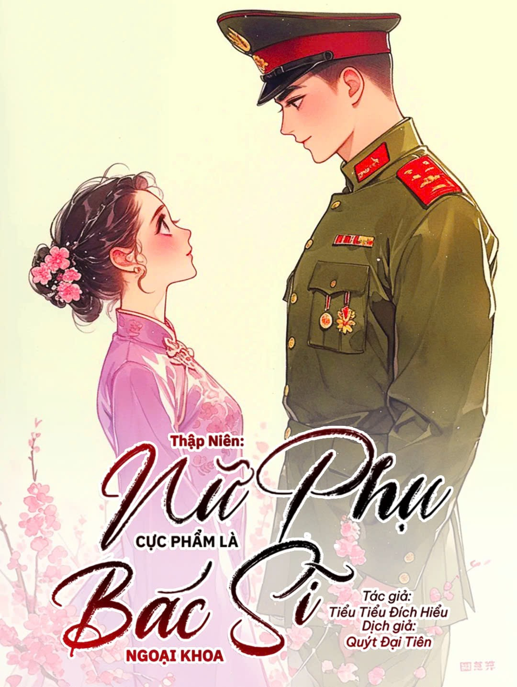

Kho truyện private

Thập Niên: Bác Sĩ Ngoại Khoa
Thẩm Từ là cô gái môi đỏ răng trắng, gian xảo lười biếng, tham ăn tinh quái.
Vừa mở mắt ra, cô đã xuyên không vào một quyển tiểu thuyết thập niên, trở thành nữ phụ tai tiếng. Cảnh mở màn là cô phải đưa ra lựa chọn định đoạt cuộc đời: hoặc đi lao động ở nông thôn, hoặc lấy chồng.
Nông thôn là nơi đất trời bao la, mưa gió không sợ, cô có thể vì nhân dân hiến dâng tuổi trẻ.
Lấy chồng lại là cuộc hôn nhân do cha mẹ sắp đặt, trợ cấp của chồng cầm trọn tay, mỗi ngày đều được ngủ thỏa thích.
Giữa hai con đường, đứa ngốc cũng biết chọn thế nào.
Thẩm Từ nói: “Lấy chồng, nhất định phải lấy chồng!”
Ước mơ thì đầy đặn, hiện thực lại xương xẩu, đi được nửa đường sao lại thấy sai sai thế này.
Ai khuyên người khác học y, sẽ bị trời đánh thánh đâm. Bác sĩ Thẩm ngày nào cũng mệt rã rời đến tận bình minh.
Thẩm Từ bày tỏ: “Không biết từ lúc nào, tinh thần sự nghiệp của mình lại mạnh mẽ đáng sợ đến thế!”
...
Gần đây trong khu nhà tập thể rộ lên một tin siêu chấn động. Đội trưởng Cố sắp kết hôn với em gái của phó đội trưởng Thẩm! Nghe nói em gái của phó đội trưởng Thẩm làm gì cũng hỏng, ăn gì cũng không chừa.
Đội trưởng Cố với phó đội trưởng Thẩm quan hệ tốt đến thế, mà lại “đâm sau lưng” bạn?
Hại ai không hại, lại đi hại anh em!
Đếm từng ngày, cuối cùng con nhóc lưu manh bên nhà phó đội trưởng Thẩm cũng tới.
Vừa nhìn thấy đồng chí Tiểu Thẩm mặt mày như họa, sắc sảo trời sinh...
Các chiến hữu: “Nào nào nào, phó đội trưởng Thẩm, đến hại tôi đi!”
Cái hố này, sao lại để đội trưởng Cố lọt xuống được?